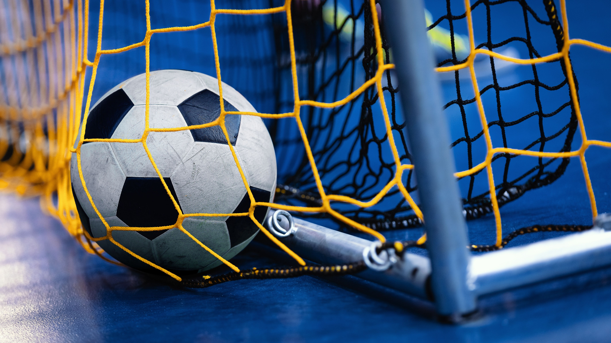
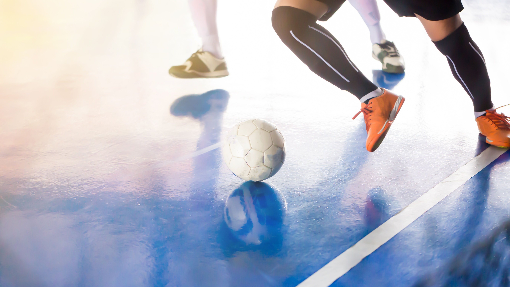
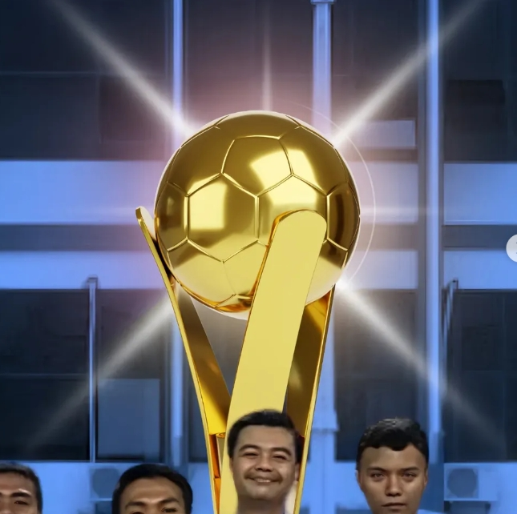
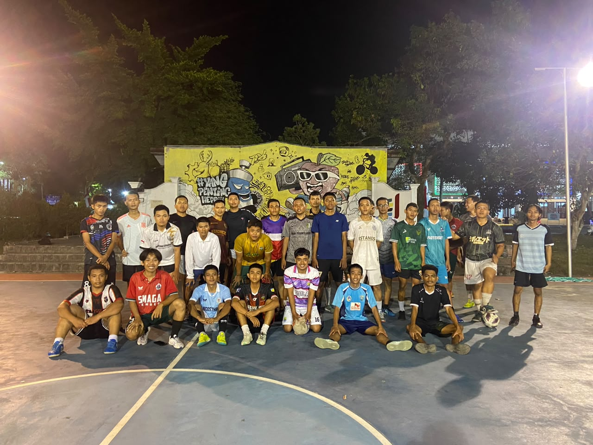
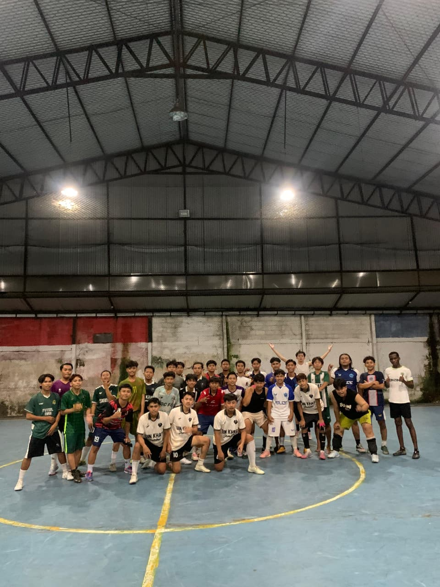

UKM Olahraga Futsal POLIJE
UKM Futsal Politeknik Negeri Jember (Polije) adalah unit kegiatan mahasiswa di bidang olahraga yang menjadi wadah bagi mahasiswa untuk menyalurkan minat, bakat, dan kemampuan dalam olahraga futsal. UKM ini tidak hanya berfokus pada prestasi, tetapi juga pada pembentukan karakter, kebersamaan, dan gaya hidup sehat di lingkungan kampus.


Tentang Kami
Wadah mahasiswa Politeknik Negeri Jember untuk menyalurkan bakat, membangun karakter, dan mengukir prestasi lewat futsal.
Prestasi
-

JUARA 2UNEJ CUP 2025 -

JUARAENGINEERING CUP 2026
Galeri




Ingin bergabung dengan UKM Olahraga Futsal POLIJE
Ayo gabung bersama kami!